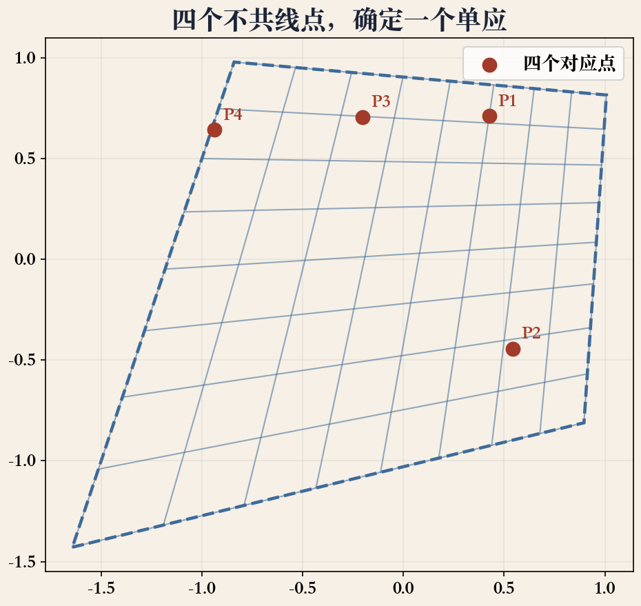
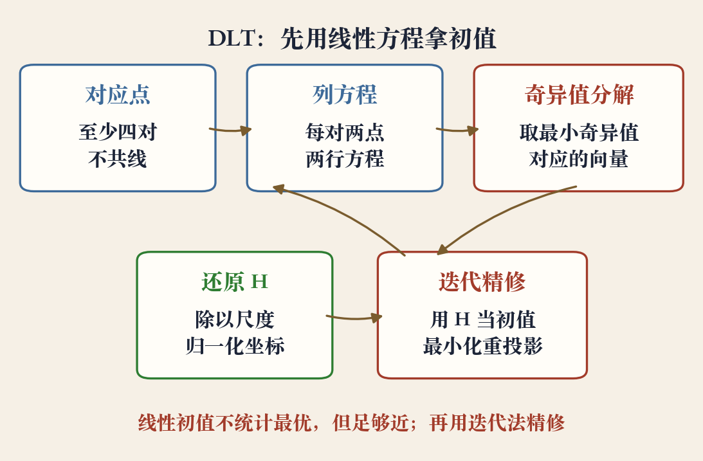
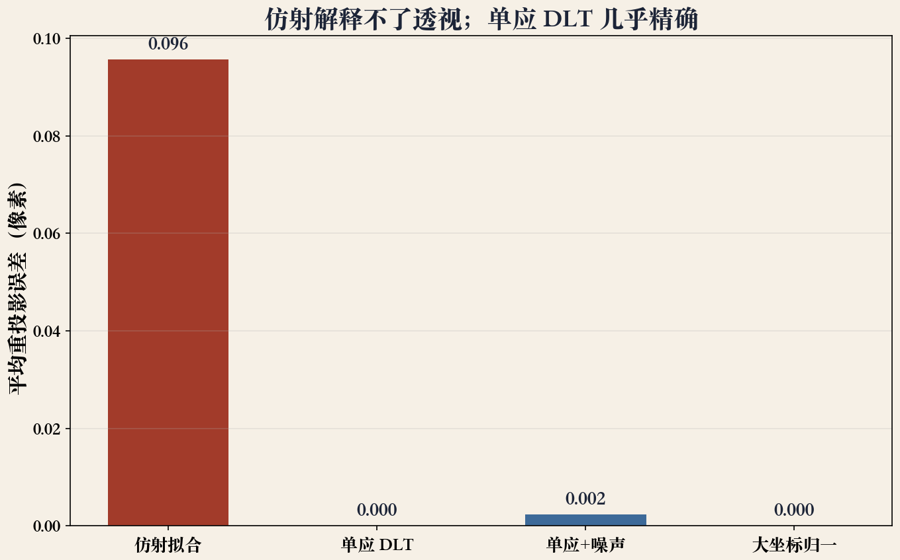

开场 · 三个数字
先看九个、八个、四个
- 三乘三矩阵，九个元素，八个自由比值。
- 四个不共线点，给出一组初值。
- 先讲矩阵和方程，再讲怎么解。
- 本集只讲单应参数化与 DLT。
依据：原书第 508–509 页
层次运动模型
从平移到投影，参数越来越多
- 平移 2 个参数，欧氏 3 个。
- 相似 4 个，仿射 6 个，投影 8 个。
- 单应多出的分母随位置变化。
- 其他二维模型的导数更直接。
依据：原书第 508 页；表 8.1
齐次坐标与尺度
九个元素，八个比值
- 齐次坐标先补 1，乘完再除。
- 九个元素整体乘常数，映射不变。
- 通常把右下角固定为 1。
- 剩下八个未知量。
依据：原书第 508 页式 8.19
H 是 3×3，8 个自由度
右下角固定为 1 只是尺度约定
实验一 · 四对点
四对点确定一个单应
- 每个对应点给两行方程。
- 八个未知量，至少要四对点。
- 四个点不能有三个共线。
- 点越多、分布越开，解越稳。
依据：原书第 508 页；本集实验

四个不共线点确定一个单应｜程序生成，未用教材或论文原图
矩阵三行
第三行决定透视强弱
- 前两行负责平移、旋转、缩放、剪切。
- 第三行负责透视强弱。
- 第三行越大，近大远小越明显。
- 平面海报和纯旋转都能用它描述。
依据：原书第 508 页
三行分工
前两行：仿射部分
第三行：透视部分
分母 D：位置和参数的函数
参数形式
两个分式共用一个分母
- 横坐标和纵坐标各是一个分子。
- 两个分子除以同一个分母 D。
- D = h20 x + h21 y + 1。
- D 随位置和参数变化。
依据：原书第 508 页式 8.19
x′ = X / D，y′ = Y / D
D = h20 x + h21 y + 1
雅可比
分母进了雅可比
- 雅可比每行都除以当前分母。
- 分子里带着当前预测坐标。
- 每次更新参数都要重算。
- 单应的迭代比仿射贵。
依据：原书第 508 页式 8.20
为什么贵
分母随参数变
雅可比不能预先算死
换来的是真实透视
线性初值
同乘分母，方程变线性
- 分式两边同乘分母 D。
- 八个未知量，一堆线性方程。
- 这就是直接线性变换 DLT。
- 先线性拿初值，再非线性精修。
依据：原书第 508 页
实验二 · 求解
堆起矩阵，做奇异值分解
- 每对点写两行方程。
- 所有点堆成一个大矩阵。
- 最小奇异值对应的向量就是 H。
- 排成三乘三，再除以右下角。
依据：原书第 508–509 页；本集实验

DLT 管线：至少四对→两行方程→奇异值分解｜程序生成，未用教材或论文原图
统计最优
线性解不是统计最优
- 乘分母时，各点被放大的倍数不同。
- 远离中心的点误差被放大。
- 按 1/D 给每行方程重加权。
- DLT 是好初值，不是最终答案。
依据：原书第 509 页
两步走
DLT 拿初值
重投影误差迭代
1/D 重加权补公平
数值条件
先归一化，再解 DLT
- 质心移到原点，平均距离缩到根号二。
- 坐标动辄上千像素，数值条件差。
- 归一化只改数值，不改几何。
- 解完把变换还原回去。
依据：原书第 509 页；本集实验
归一化三步
平移质心到原点
缩放到平均距离根号二
解完再乘回去
退化
三点共线就解不出来
- 三个点共线，少一个独立约束。
- 解不唯一，或者数值病态。
- 选点要覆盖平面，面积尽量大。
- 条件数比残差更早报警。
依据：本集实验
选点四不要
不要三点共线
不要挤在一个角
不要只排成一条线
不要只用四对点
适用场景
平面，或者相机原地转
- 场景本身是一个平面：海报、白板、桌面。
- 相机绕光心纯旋转，不看场景深度。
- 满足一个就够用。
- 两个都不满足，硬套会出重影。
依据：原书第 508 页；8.2 节应用
实验三 · 误差对照
透视的差距有多大
- 四点 DLT 精确复原。
- 二十点带噪声，平均误差约零点零零二。
- 同一组数据，仿射误差约零点零九六。
- 三点共线，次小奇异值接近零。
依据：本集实验；读数见 readings

误差对照：仿射 0.096，单应近零，噪声 0.002｜程序生成，未用教材或论文原图
工程流程
选点、DLT、迭代、RANSAC
- 先选四对以上、分布好的点。
- 用归一化 DLT 拿初值。
- 用重投影误差迭代精修。
- 有外点，前面加 RANSAC。
依据：原书 8.1.3/8.1.4；本集实验
顺序
RANSAC 挑一致集
归一化 DLT 拿初值
重投影误差迭代精修
收束 · 下一集
下一集：多图一起对齐
- 三乘三、八自由度、四对不共线点。
- 分母导致非线性，先用 DLT 拿初值。
- 归一化和 RANSAC 是工程保险。
- 下一集讲多图捆扎调整。
依据：原书第 508–509 页
本集四件事
矩阵参数化
分母与雅可比
DLT 初值
退化与适用